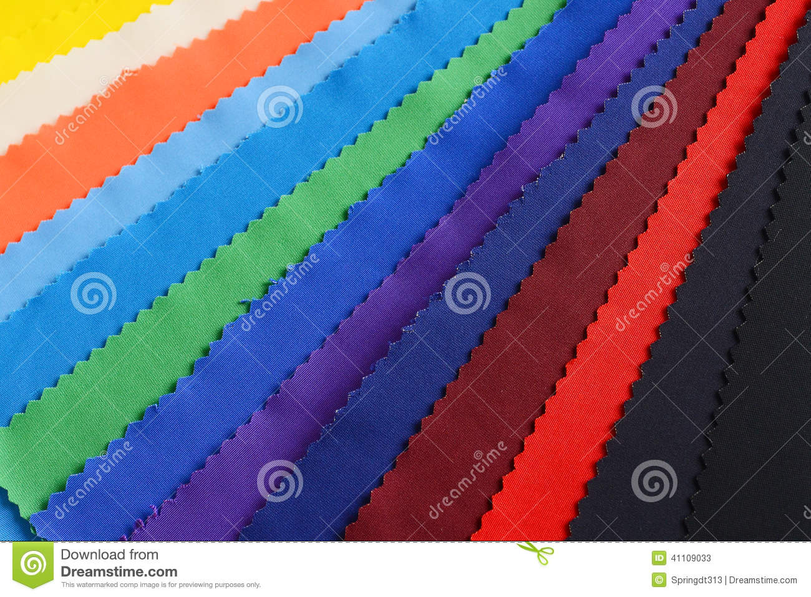
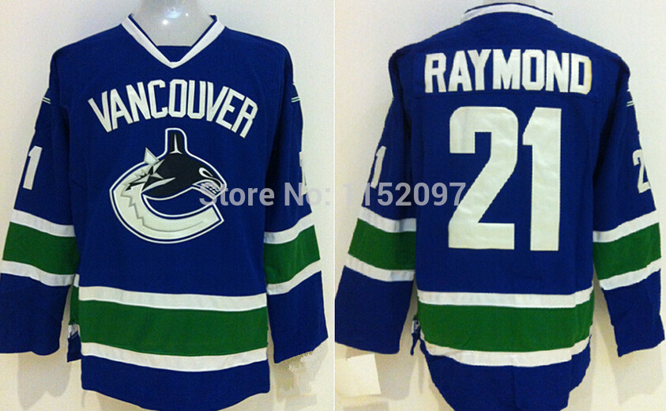

RAYMOND GROUP
The Raymond Group was incorporated in 1925 and within a span of a few years, transformed from being an Indian textile major to a global conglomerate.
SHIRT MATERIALS
Define and research your target audience, define your strategy to reach that audience and present a strong and memorable brand to that audience. Read more...
FORMAL SHIRTS
In our endeavor to keep nurturing quality and leadership, we always choose the path untaken - from being the first in 1959 to introduce a polywool blend in India to creating the world's finest suiting fabric the Super 250s made from the superfine 11.4 micron wool. Read more...
CASUAL SHIRTS
Today, the Raymond group is vertically and horizontally integrated to provide customers total textile solutions. Few companies globally have such a diverse product range of nearly 20,000 varieties of worsted suiting to cater to customers across age groups, occasions and styles. Read more...